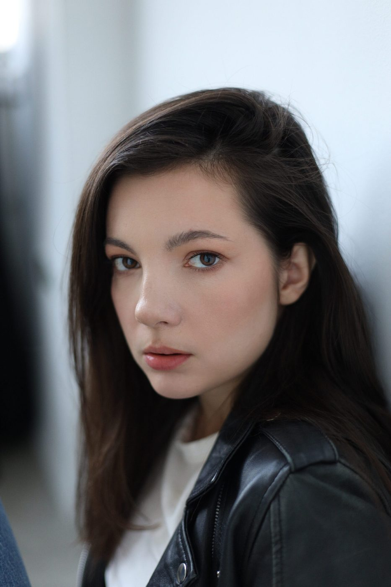

Человек — не набор симптомов. Человек — это история.
Глубокая работа с мышлением, эмоциями, бессознательными сценариями и телом для возвращения устойчивости и внутренней свободы.

Я — актриса и интегративный психолог. В своей практике я соединяю глубокое понимание человеческой природы, психосоматическую коррекцию, эмоционально-образную терапию и телесные практики.
Мой путь в психологию начался с актёрской профессии и интереса к тому, как устроен человек. Со временем мне захотелось глубже понять, почему мы чувствуем и реагируем так, а не иначе, как формируются наши внутренние сценарии и что помогает нам меняться.
Терапия со мной — это безопасность, глубина и честность.
Я не верю в быстрые решения. Но я знаю, что психика способна меняться, когда у нее появляется достаточно безопасности, времени и нового опыта.
В своей работе я объединяю несколько подходов и методов психотерапии. Это позволяет одновременно работать с мышлением, эмоциями, бессознательными процессами и телом.
Благодаря этому изменения происходят не только на уровне понимания («я всё понял головой»), но и постепенно становятся частью повседневной жизни.
Меняются телесные реакции, привычные способы справляться со стрессом, и появляется возможность реагировать по-новому.
«Результат терапии — это не отсутствие боли, а возможность реагировать по-новому.»
Постоянное внутреннее напряжение, гиперответственность, невозможность расслабиться, ощущение, что нужно всё контролировать и всегда быть начеку.
Когда тело реагирует на стресс болью, хроническим напряжением, усталостью или другими симптомами, даже если медицинские обследования не объясняют их полностью.
Сомнения в себе, синдром самозванца, потеря ощущения внутренней опоры, постоянные попытки заслужить любовь, признание или право быть собой.
Трудности с близостью, доверием и личными границами, повторяющиеся конфликты, страх быть отвергнутым или, наоборот, потерять себя в отношениях.
Когда становится сложно понимать свои желания, чувства и потребности, жизнь проходит «на автомате», а внутри появляется ощущение пустоты или потерянности.
Когда похожие ситуации снова и снова повторяются в отношениях, работе, финансах или ощущении себя, словно жизнь каждый раз приводит в одну и ту же точку.
Если вы не нашли свой запрос в этом списке, это не значит, что я с ним не работаю. Иногда человеку сложно сразу назвать проблему словами — и это совершенно нормально.
Индивидуальная работа, выстроенная вокруг вашего запроса, жизненной ситуации и темпа, в котором вы готовы двигаться.
Для тех, кто хочет работать глубже и нуждается в поддержке между сессиями.
Четыре часа дыхательных, телесных и практик на саморегуляцию для тех, кто хочет замедлиться, выдохнуть и вернуть контакт с собой.
Трехдневный практический интенсив о том, как формируется стресс, почему тело говорит через симптомы и как научиться его понимать.
Две недели ежедневной практики дыхания для возвращения устойчивости и контакта с собой.
Каждая терапия начинается со знакомства. Мы вместе разбираемся, что привело вас сейчас, определяем запрос и понимаем, в каком направлении хочется двигаться дальше.
Я не работаю по готовым схемам, потому что не бывает двух одинаковых людей. В работе мне важно учитывать не только запрос, но и особенности вашей личности, жизненный опыт, темп и способы, которыми вы привыкли справляться со сложностями.
Поэтому терапия для меня — это всегда живой процесс, который строится вокруг конкретного человека, а не вокруг заранее заданного метода.
Если вы чувствуете, что пришло время разобраться в себе и хотите понять, подойдёт ли вам такой формат работы, напишите мне в Telegram. Расскажите о своём запросе, и мы договоримся о первой встрече.